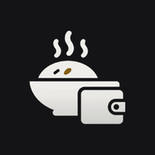

Meal Bazarমিল বাজার
Meal Bazar — অ্যাকাউন্ট মুছে ফেলা / Account deletion
ডেভেলপার / Developer: Md. Arafatuzzaman এই পাতার ঠিকানা / This page: https://meal-bazar-admin.vercel.app/delete-account.html
বাংলা
অ্যাপ থেকে (সবচেয়ে দ্রুত)
- Meal Bazar খুলুন ও লগইন করুন।
- নিচের মেনু থেকে আরও → অ্যাকাউন্ট → অ্যাকাউন্ট মুছে ফেলুন।
- কী মুছবে আর কী থাকবে তা পড়ুন, নিশ্চিত করতে মুছুন লিখুন, তারপর চিরতরে মুছুন চাপুন।
আপনি কোনো মেসের একমাত্র ম্যানেজার হলে আগে অন্য কাউকে ম্যানেজার করুন, নইলে মোছা যাবে না।
অ্যাপ ছাড়া (ইমেইলে)
makky.cse@gmail.com-এ বিষয় "Delete my Meal Bazar account" লিখে ইমেইল করুন, আপনার অ্যাকাউন্টের ইমেইল ঠিকানা থেকে। আমরা মালিকানা যাচাই করে 30 দিনের মধ্যে মুছে দেব।
যা মুছে যায়
- আপনার নাম (প্রোফাইলে "Former member" হয়ে যায়), ফোন নম্বর ও প্রোফাইল ছবি — সঙ্গে সঙ্গে।
- আপনার লগইন অ্যাকাউন্ট (ইমেইল / Google লিংক) — দৈনিক স্বয়ংক্রিয় কাজে স্থায়ীভাবে, সাধারণত ২৪ ঘণ্টার মধ্যে।
- অপেক্ষমাণ যোগদানের অনুরোধ এবং সব মেসে আপনার প্রবেশাধিকার।
যা থাকে, এবং কেন
- মেসের মিল, বাজার, খরচ, জমা (TrxID সহ), রসিদের ছবি ও কার্যক্রমের লগ — এগুলো মেসের হিসাব; মুছলে অন্য সদস্যদের বিল বদলে যেত। এসব রেকর্ডে মেস আপনাকে যে নামে রেখেছিল সেটি থাকে, কিন্তু আর কোনো অ্যাকাউন্টের সাথে যুক্ত থাকে না। মেস যতদিন আছে ততদিন থাকে।
- মুছে ফেলার অনুরোধের রেকর্ড (ব্যবহারকারী আইডি ও সময়) — প্রমাণ হিসেবে।
- যে মেসে আপনি ছাড়া আর কোনো অ্যাপ ব্যবহারকারী নেই, সেটি বন্ধ (মুছে ফেলা হিসেবে চিহ্নিত) হয়।
English
In the app (fastest)
- Open Meal Bazar and sign in.
- From the bottom menu: আরও (More) → অ্যাকাউন্ট (Account) → অ্যাকাউন্ট মুছে ফেলুন (Delete account).
- Read what is removed and kept, type the confirmation word shown, then tap Delete forever.
If you are the only manager of a mess, make someone else manager first; otherwise deletion is refused.
Without the app (by email)
Email makky.cse@gmail.com from your account's email address with the subject "Delete my Meal Bazar account". We will verify ownership and delete the account within 30 days.
What is deleted
- Your name (the profile becomes "Former member"), phone number and profile photo — immediately.
- Your sign-in account (email / Google link) — permanently, by an automatic daily job, normally within 24 hours.
- Pending join requests and your access to every mess.
What is kept, and why
- The mess's meals, bazar, expenses, deposits (including TrxIDs), receipt photos and activity log. These are the mess's accounts; removing them would change other members' bills. The name the mess used for you stays in those records but is no longer linked to any account. Kept for as long as the mess exists.
- A record of the deletion request (user ID and timestamps), as proof it was processed.
- A mess with no other app users is closed (marked deleted).